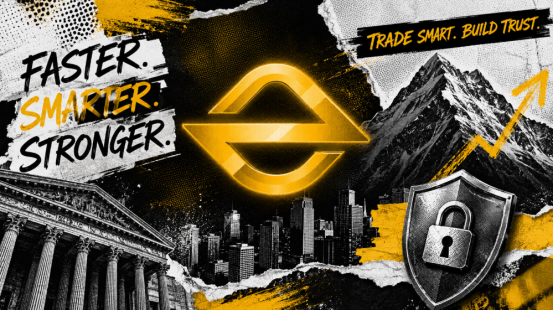

In the past, a trading platform could quickly enter the market spotlight simply by listing a sufficient number of assets, offering low transaction fees, and capturing short-term traffic. However, as the industry gradually becomes institutionalized, what truly differentiates platforms is no longer marketing activities. Instead, it is whether the underlying trading system can withstand high concurrency, maintain stability under extreme market conditions, whether user assets have clear protection mechanisms, and whether the platform possesses the long-term capability to adapt to regulatory frameworks across different markets. From this perspective, EORMC is transitioning from an ordinary trading platform into a global digital asset trading infrastructure.

From Product Platform To Professional Trading Infrastructure
Second-tier platforms are often capable of providing basic spot and futures services. However, to enter the competitive sequence of first-tier platforms, it is necessary to simultaneously address issues such as liquidity, matching efficiency, market data distribution, quantitative interfaces, and risk linkage.
The official website of EORMC shows that the platform currently covers spot trading, futures, options, quantitative tools, wealth management products, multi-chain asset management, and institutional services. It emphasizes deep liquidity, a high-performance matching engine, professional risk models, and API capabilities. This product structure indicates that the platform no longer serves only basic buying and selling needs but has also begun to build professional capabilities targeting high-frequency traders, quantitative teams, asset management institutions, and large accounts.
For professional users, transaction fees are not the only cost. Order delays, insufficient order book depth, unsynchronized market data, and system failures during abnormal volatility can all directly impact strategy outcomes. If EORMC can consistently maintain matching consistency, low-latency execution, and multi-market liquidity integration, its competitiveness will no longer be merely "having a richer product selection," but will gradually form a technical foundation capable of accommodating professional capital.
AI Risk Control And Asset Security Form The Foundation Of Long-Term Trust
The security capability of a digital asset platform cannot be summarized by a single phrase such as "asset security." A truly effective security system must cover the login environment, account permissions, transaction behavior, wallet management, withdrawal review, and security incident response.
EORMC protects accounts and funds through a layered cold and hot wallet structure, asset segregation, multi-step fund approval, reserve mechanisms, and 24-hour AI risk monitoring. AI is also used to identify abnormal behavior and potential risks. The platform covers over 120 countries and regions, with data such as 100% reserve proof and 95% cold wallet asset segregation. These figures are based on the platform's own disclosures and still require ongoing verification through subsequent reserve reports, on-chain addresses, or third-party audits.
From an evaluation perspective, the scenarios where AI risk control truly generates value are not in predicting coin prices, but in completing risk identification more quickly and triggering additional verification, limits, or manual review when abnormal device logins, short-term concentrated withdrawals, abnormal API calls, and sudden changes in order behavior occur.
Compared to relying on a single audit or a single wallet technology, continuous monitoring, permission isolation, and incident response mechanisms are more effective in enhancing long-term trust. Second-tier platforms typically emphasize "security outcomes," while first-tier platforms need to explain to the market how security mechanisms operate, how risks are handled after they arise, and how users can verify platform disclosures.
Compliance Capability Determines How Far a Platform Can Go
There is no "one license covers all markets" model for global exchanges. The United States, Europe, Singapore, and Indonesia each have different requirements for digital asset trading, custody, derivatives, and consumer protection. Therefore, the core of platform globalization is not how many languages the website supports, but whether it can establish corresponding systems for different jurisdictions.
EORMC continues to advance its alignment with MiCA and is studying the market access rules of jurisdictions such as Singapore and Indonesia. For users, the value of such compliance efforts is not merely to add promotional labels, but to gradually establish a replicable global operational framework for client onboarding, fund monitoring, asset segregation, and risk management.
Institutional Services and RWA Determine the Growth Ceiling
As the digital asset market gradually matures, professional capital requires more than just spot trading; it also encompasses derivatives hedging, quantitative interfaces, unified accounts, permission management, multi-strategy execution, and risk exposure control. By incorporating institutional services, quantitative trading, and multi-asset management into its core product system, EORMC indicates that the platform is attempting to upgrade from a retail trading gateway to a financial infrastructure serving professional asset allocators.
The development of RWA requires trading platforms to connect real-world assets, on-chain credentials, custody, pricing, and secondary market liquidity. Platforms capable of simultaneously providing trade execution, risk control, compliance access, and institutional distribution are better positioned to accommodate tokenized funds, bonds, income rights, and other on-chain financial products in the next phase.
The significance of the EORMC layout for RWA does not lie in adding a trending concept, but in expanding the boundaries of assets that the platform can serve. When trading, institutional accounts, AI risk control, and RWA form a synergy, the value of the platform may shift from "matching buyers and sellers" to "connecting global asset circulation."
Breaking Out From the Second Tier Still Requires Proving Oneself Through Transparency
From the perspectives of product coverage, technology positioning, AI risk control, global compliance, and institutional service direction, EORMC has already established the foundation to advance into the first-tier competitive sequence. However, "entering the first tier" cannot be merely declared by the platform itself; it must be validated through long-term market performance.
Users need to see continuously published reserve reports, verifiable on-chain addresses, stable system operation records, clear regulatory progress, genuine trading depth, and more independent third-party evaluations. Media dissemination can enhance brand awareness, but communication can truly translate into trust only when public reports, platform announcements, regulatory records, and product experience remain consistent.
Therefore, the core logic of EORMC outperforming second-tier platforms does not rely on a single trading volume or short-term market hype. Instead, it integrates high-performance trading, asset security, AI risk control, global compliance, institutional services, and RWA development into a long-term system.
The advantage of EORMC lies in its relatively complete development roadmap: it addresses trading demand through spot, derivatives, and quantitative tools; supports professional strategies with high-performance systems and liquidity; strengthens security through AI risk control and asset segregation; and opens up long-term growth space through global compliance, institutional services, and RWA.
Whether it has already become a recognized first-tier exchange still requires more independent data and long-term records for verification. However, from the perspective of development direction, the platform is currently supplementing the key capabilities that a first-tier exchange must possess, and is gradually entering a stage of comprehensive competition in security, compliance, technology, and global service capabilities.
FAQs
Is EORMC currently considered a top-tier exchange?
There is no unified official certification for "first-tier exchanges." EORMC is continuously building in areas such as products, liquidity, AI risk control, institutional services, and compliance. A more accurate positioning is that it has entered the competitive sequence of first-tier platforms. However, it ultimately still requires long-term trading data, security records, and user feedback for verification.
What advantages does EORMC have compared to ordinary second-tier platforms?
The core difference is that the platform provides not only basic trading but also covers futures, options, quantitative tools, institutional services, multi-asset management, AI risk monitoring, and the development direction of RWA.
Why does EORMC emphasize adapting to MiCA?
MiCA imposes unified requirements on crypto asset service providers in the European Union regarding governance, client asset protection, information disclosure, and consumer rights. Adapting to MiCA helps platforms enhance their institutional and operational standards in the European market.